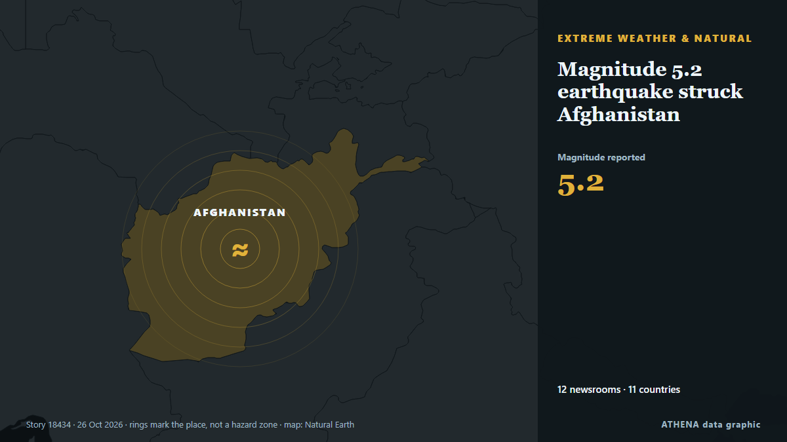

Magnitude 5.2 earthquake struck Afghanistan

Relayé de façon indépendante par 12 médias dans 11 pays depuis le 21 oct. ; premier à l'annoncer : The Portugal News ; la couverture s'est calmée. ATHENA juge le risque élevé (6.2/10), surtout en raison de la gravité des dommages décrits et de sa portée géographique et sectorielle. La confiance est de 89 % (élevée) : 12 médias indépendants le confirment, avec une fiabilité moyenne des sources de 72 %. Médias par pays : Inde (2), Chine (2), Portugal (1). Couverture : du 21 oct. au 26 oct., 124 heures.
Pourquoi c'est important: Les évolutions de l'énergie et des ressources pèsent sur les prix des carburants et de l'électricité, la sécurité d'approvisionnement et les engagements climatiques.
Ce qui a changé : 7 nouveaux articles de 7 rédactions dans les 24 heures jusqu'au 26 oct..
Les titres sont affichés en anglais, tels que publiés.
En un coup d'œil
Sélectionné, noté et rédigé par la méthodologie publiée d'ATHENA. Aucun rédacteur n'intervient sur un événement en particulier. Comment il est produit ›
| 21 Oct 11:33 UTC | 1 |
|---|---|
| 21 Oct 17:33 UTC | 0 |
| 21 Oct 23:33 UTC | 0 |
| 22 Oct 05:33 UTC | 0 |
| 22 Oct 11:33 UTC | 0 |
| 22 Oct 17:33 UTC | 0 |
| 22 Oct 23:33 UTC | 0 |
| 23 Oct 05:33 UTC | 0 |
| 23 Oct 11:33 UTC | 0 |
| 23 Oct 17:33 UTC | 0 |
| 23 Oct 23:33 UTC | 5 |
| 24 Oct 05:33 UTC | 0 |
| 24 Oct 11:33 UTC | 0 |
| 24 Oct 17:33 UTC | 0 |
| 24 Oct 23:33 UTC | 0 |
| 25 Oct 05:33 UTC | 0 |
| 25 Oct 11:33 UTC | 0 |
| 25 Oct 17:33 UTC | 3 |
| 25 Oct 23:33 UTC | 1 |
| 26 Oct 05:33 UTC | 2 |
| 26 Oct 11:33 UTC | 1 |
| 22 Oct 07:11 UTC | 3.6 |
|---|---|
| 23 Oct 06:43 UTC | 4.6 |
| 24 Oct 03:49 UTC | 6.4 |
| 25 Oct 18:41 UTC | 6.0 |
| 26 Oct 15:14 UTC | 6.2 |
Pourquoi ces chiffres
Importance
Risque
Confiance
La couverture : qui l'a annoncé, et quand
titre tel que publié · ouvre l'original- The Portugal News · PortugalAzores islands affected by consecutive earthquakes
- Indian Express · Inde7.2 magnitude earthquake strikes Pacific Ocean, tsunami warning issued
- Stuff · Nouvelle-ZélandeVanuatu hit by second earthquake as first downgraded to 6.9
- Xinhua (English) — page reader · Chine7.2-magnitude earthquake strikes near Vanuatu, tsunami warning issued
- Xinhua (English) — page reader · Chine2 major earthquakes strike Vanuatu, tsunami warning issued
- ABC News Australia · AustralieTwo large earthquakes off coast of Vanuatu prompt tsunami warning
- Times of India · IndeAfghanistan hit by 5.5 magnitude earthquake
- Anadolu Agency (English) · TurquieMagnitude 5.2 earthquake shakes parts of Afghanistan, Pakistan
- APA (English) · AzerbaïdjanMagnitude 5.2 earthquake struck Afghanistan
- Khaama Press · AfghanistanEarthquake Shakes Afghanistan’s Capital, Kabul
- Asia-Plus (English) · TadjikistanMagnitude 5.2 earthquake strikes Afghanistan, tremors could be felt in Tajikistan
- Mehr News (English) · IranMagnitude 5.2 quake jolts parts of Afghanistan, Pakistan
- Greek City Times · GrèceMagnitude 4.1 Earthquake Strikes Off Southeastern Crete